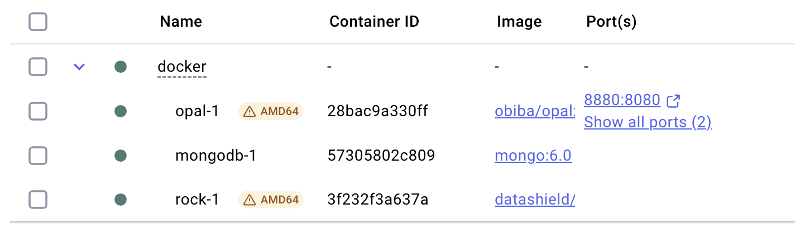

deploy-local-datashield-server-with-opal.RmdOpal is OBiBa’s core database application for epidemiological studies. Participant data, collected by questionnaires, medical instruments, sensors, administrative databases etc. can be integrated and stored in a central data repository under a uniform model. Opal is a web application that can import, process, copy data and has advanced features for cataloging the data (fully described, annotated and searchable data dictionaries) as recommended by the Maelstrom Research group at McGill University, Canada. Opal is typically used by a research center to analyze the data acquired from assessment centres. Its ultimate purpose is to achieve seamless data-sharing among epidemiological studies. Opal is the reference implementation of the DataSHIELD infrastructure. More information on Opal can be found in the Opal description on OBiBa.
Source: https://isglobal-brge.github.io/resource_bookdown/opal.html
Here we will spawn a local instance of DataSHIELD with Docker. We will assume you have installed and configured Docker on your computer; however, if that’s not the case, visit their get started with Docker page.
The easiest way to deploy DataSHIELD with docker is by cloning the
following repo: OllyButters/datashield_pcr.
Here, you will find a step by step guide, including a very useful docker-compose.yml
file, which you can use out of the box.
If you are running Linux or macOS, you can run the following commands:
git clone https://github.com/OllyButters/datashield_pcr
cd datashield_pcr/docker
docker compose up -dThen you can inspect the Docker GUI, where you should see something like the following:

By default, the docker-compose.yml
file in the repo above defines a demo user, demo_user, with
the following password: Demo_password1! (edit the variables
OPAL_DEMO_USER_NAME and
OPAL_DEMO_USER_PASSWORD accordingly). Here, we will open a
connection to our local server using these credentials:
# define global variables
USERNAME <- "demo_user"
USERPASS <- "Demo_password1!"
PROJECT <- "DEMO"
TABLES <- c("CNSIM1")
SERVER <- "https://opal-demo.obiba.org"
PROFILE <- "demo"